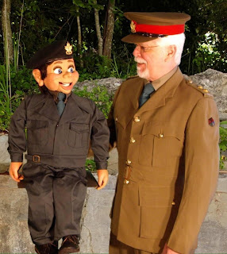

Down memory lane...
5/4/2010
{kind=link}

From Fred Anderson:
"Hi, Clinton. Here is a picture of Archie and me in our WW2 vintage uniforms. Archie's 'battle dress' uniform was tailor made for him, and my TW officers uniform, well it is an original. They are both Canadian Army designs. How come these dummies never seem to get any older?
"Archie's WW2 Canadian Army battle dress uniform is on the extra body you had made for me. Now he is a quick change artist, from uniform to tuxedo. Of course the other body wearing the tux is hidden from view. Head off, head on.
"The new shows we will be doing have both me and Archie wearing our WW2 uniforms and will be for Seniors' Centers, and Retirement Residences. I am already receiving requests for our 'Down Memory Lane' program which is a tribute to the 'hits of the blitz' songs. And I haven't started to promote it yet."
"P.S. The seamstress that made Archie's uniform had no pattern. Only the photos I sent to her that I took in the military museum. "
* * * * *
{kind=link}
"P.S. The seamstress that made Archie's uniform had no pattern. Only the photos I sent to her that I took in the military museum. "
* * * * *
Anderson Vent Tip: "Every vent should take some acting lessons. What I learned for movies and TV shows I have been in really helped me on the stage."